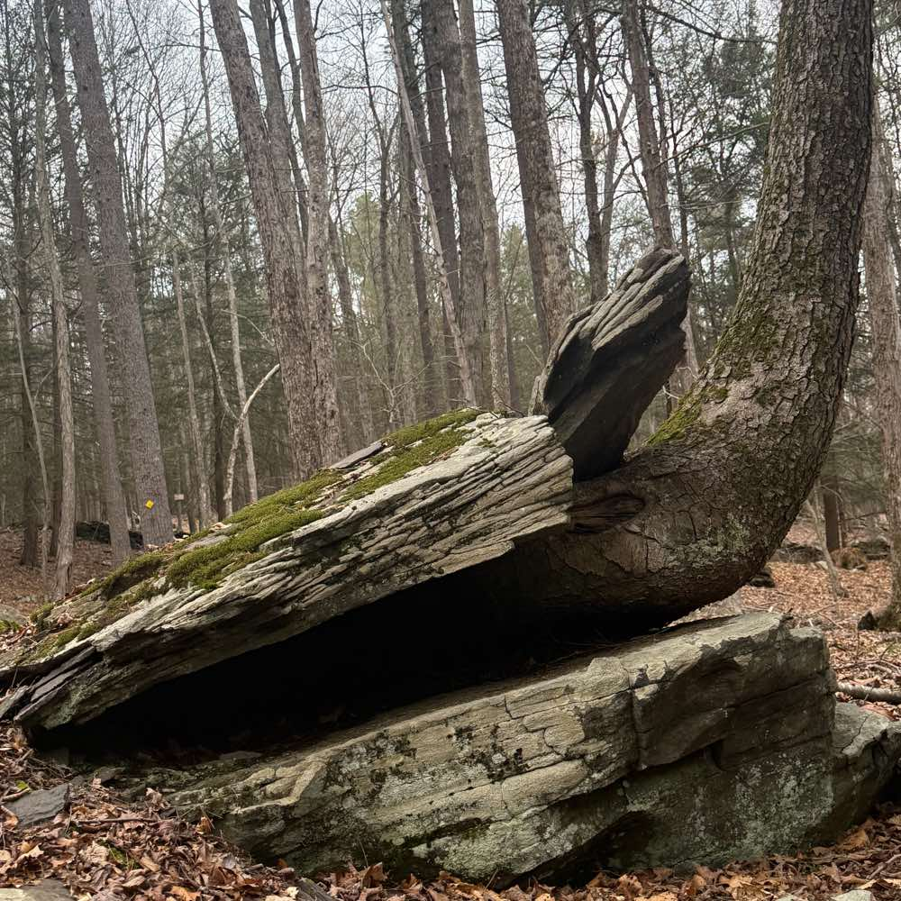
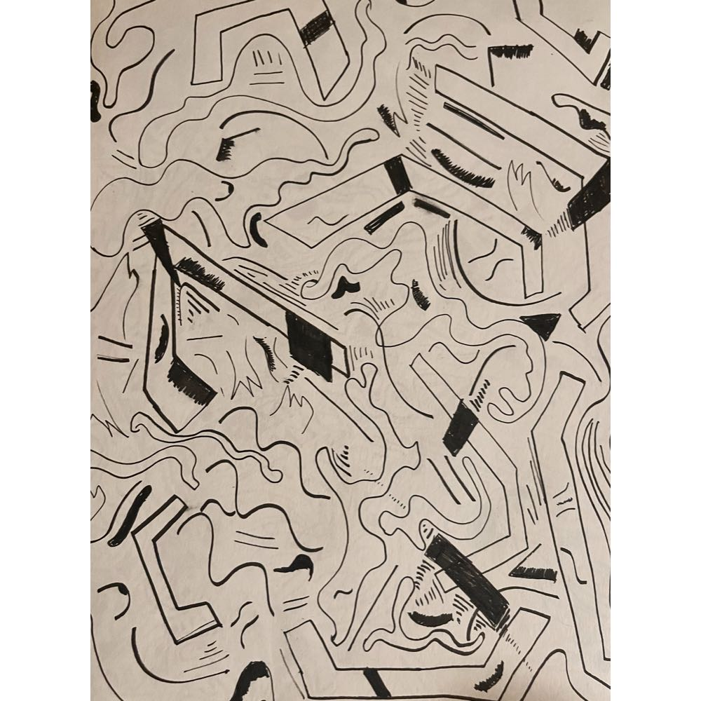

17 / project
Sigil Studio
Recreate an image out of text
Upload an image, paste text, pick an engine, adjust the detail, export SVG or PNG. Everything runs client-side in the browser — no backend, no network calls.



The four engines
- Contour trace — finds tonal outlines and flows text along them
- Spiral — draws the whole picture as one unbroken line
- Flow field — lays hatching that follows form
- Typographic halftone — one glyph per grid cell
Where it leads
Sigil Studio turns an image into a field and segments it, and has no notion of sound. That is half of the join that sounds-like is built on.
Stack
npm, Vite
Client-side only — no server, no network calls
npm, Vite
Client-side only — no server, no network calls